Candidate List 20261105Last night — ZTF: 4,202 passed basic cuts (75 young) · LSST: 812 passed basic cuts (75 young)Previous Day Next Day
Section 1: New Sources (age<1d) Section 2: Old (1-5d) sources observed last nightplaceholder
Section 1: New Afterglow/FBOT Cands Last Night (1)
1. [LSST] 171167577750896661 (Afterglow?) [Back to Top] [Fritz Alert] [Fritz Source] [Lasair]RA, Dec: 64.87018, -46.9644 4h19m28.84s, -46d-57m-51.84sGalactic (l, b): 253.40753, -45.00269 ext(g-r) = 0.012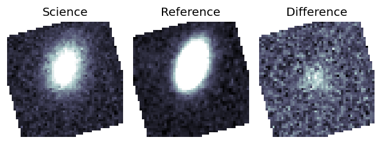

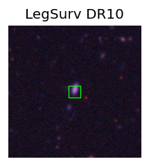
TESS: Sectors [ 4 5 30 31 32 97]
PS1: 0 sources in 3 arcsec
LegacySurvey: 1 sources in 3 arcsec Closest: d = 1.17 arcsec, 355.7 deg (east of north) photoz=0.13 (68% bounds 0.11, 0.15), type=SER peak abs mag (ext. corrected) = -17.47 (68% bounds -17.0, -17.77)
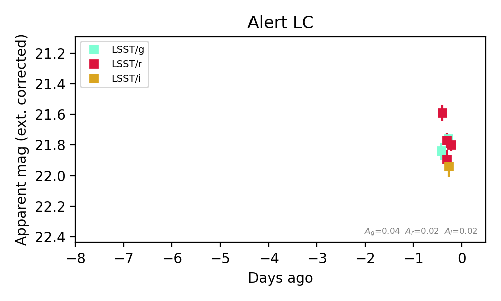
Extinction-corrected gr color:
From alerts: 0.02 +/- 0.04 mag
Extinction-corrected gi color:
From alerts: -0.16 +/- 0.08 mag
Extinction-corrected ri color:
From alerts: -0.18 +/- 0.07 mag
Consistent with synchrotron, g-r>0!
Rise Rate:
Fade Rate:
r: 1.0 mag/day
Section 2: Older Sources Observed Last Night (21)
0. [LSST] 170028498687623393 (Afterglow?) [Back to Top] [Fritz Alert] [Fritz Source] [Lasair]RA, Dec: 57.89366, -50.37737 3h51m34.48s, -50d-22m-38.53sGalactic (l, b): 259.70413, -48.79176 ext(g-r) = 0.013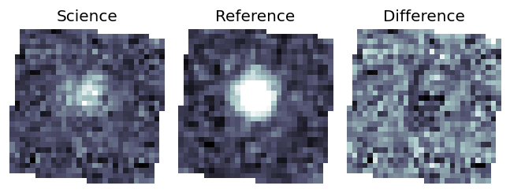

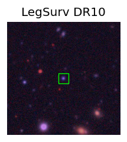
TESS: Sectors [ 3 4 30 31 97]
PS1: 0 sources in 3 arcsec
LegacySurvey: 1 sources in 3 arcsec Closest: d = 0.30 arcsec, 123.9 deg (east of north) photoz=1.16 (68% bounds 0.88, 1.85), type=PSF peak abs mag (ext. corrected) = -21.65 (68% bounds -20.9, -22.89)
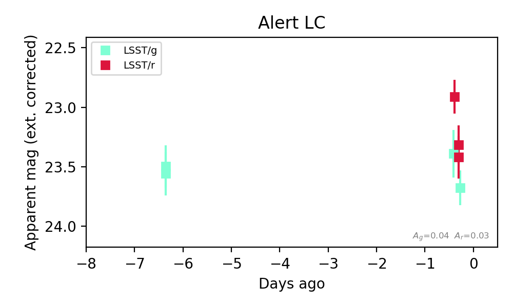
Extinction-corrected gr color:
From alerts: 0.4 +/- 0.15 mag
Consistent with synchrotron, g-r>0!
Rise Rate:
Fade Rate:
r: 5.5 mag/day
1. [LSST] 313761042392416382 (Afterglow?FBOT?) [Back to Top] [Fritz Alert] [Fritz Source] [Lasair]RA, Dec: 62.87654, -46.6694 4h11m30.37s, -46d-40m-9.85sGalactic (l, b): 253.25847, -46.3946 ext(g-r) = 0.012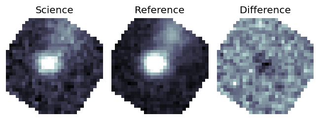

TESS: Sectors [ 3 4 5 30 31 97]
PS1: 0 sources in 3 arcsec
LegacySurvey: 1 sources in 3 arcsec Closest: d = 0.22 arcsec, 45.5 deg (east of north) photoz=1.58 (68% bounds 1.13, 1.99), type=REX peak abs mag (ext. corrected) = -22.46 (68% bounds -21.55, -23.07)
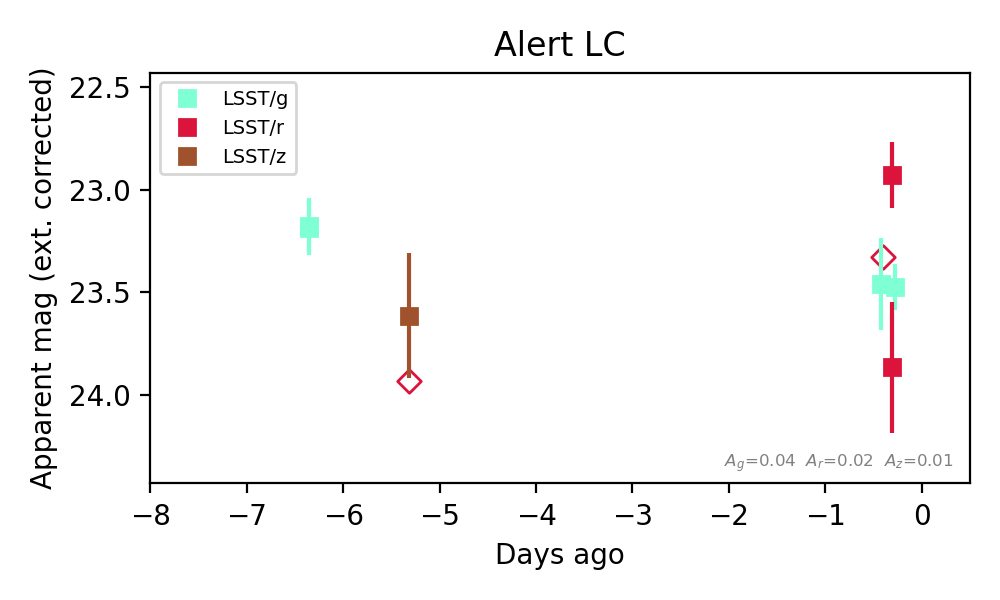
Extinction-corrected gr color:
From alerts: 0.35 +/- 0.18 mag
Consistent with synchrotron, g-r>0!
Rise Rate:
g: 0.0 mag/day
r: 4.64 mag/day
Fade Rate:
g: 0.05 mag/day
2. [LSST] 170028485828935834 (Afterglow?) [Back to Top] [Fritz Alert] [Fritz Source] [Lasair]RA, Dec: 57.65657, -48.77264 3h50m37.58s, -48d-46m-21.49sGalactic (l, b): 257.41828, -49.39038 ext(g-r) = 0.008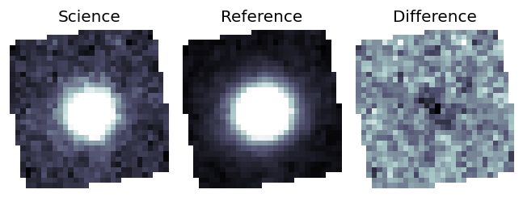

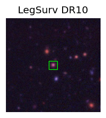
TESS: Sectors [ 3 30]
PS1: 0 sources in 3 arcsec
LegacySurvey: 1 sources in 3 arcsec Closest: d = 0.04 arcsec, 187.3 deg (east of north) photoz=0.61 (68% bounds 0.5, 0.72), type=REX peak abs mag (ext. corrected) = -20.35 (68% bounds -19.82, -20.79)
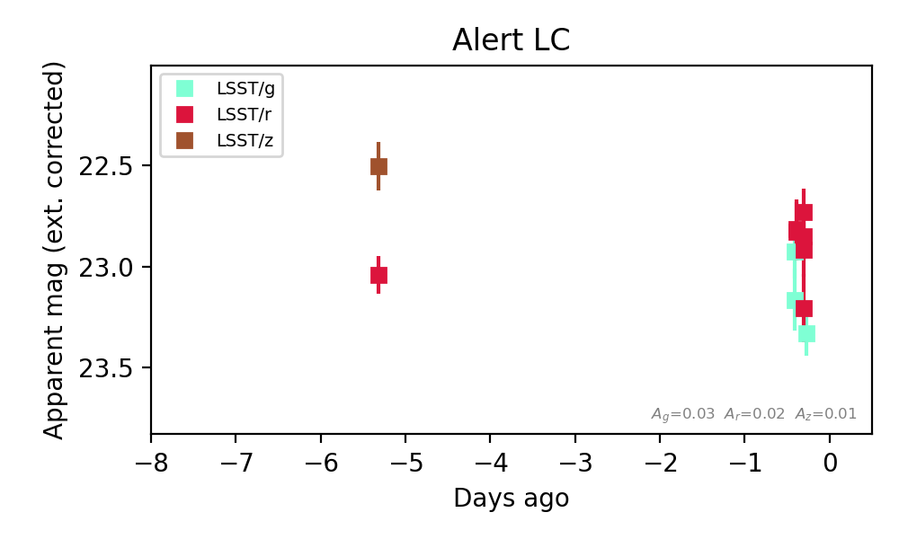
Extinction-corrected gr color:
From alerts: 0.3 +/- 0.09 mag
Consistent with synchrotron, g-r>0!
Rise Rate:
g: 0.01 mag/day
z: 0.0 mag/day
Fade Rate:
g: 2.21 mag/day
3. [LSST] 171141218181840939 (Afterglow?FBOT?) [Back to Top] [Fritz Alert] [Fritz Source] [Lasair]RA, Dec: 57.61024, -50.2828 3h50m26.46s, -50d-16m-58.07sGalactic (l, b): 259.648, -48.99255 ext(g-r) = 0.016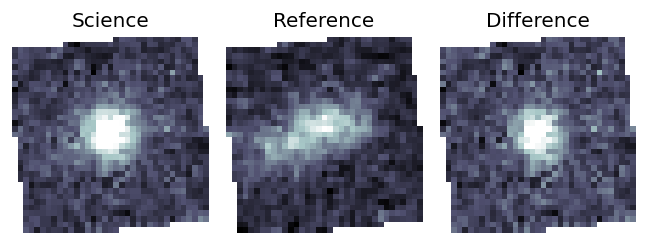

TESS: Sectors [ 3 4 30 31 97]
PS1: 0 sources in 3 arcsec
LegacySurvey: 1 sources in 3 arcsec Closest: d = 0.47 arcsec, 81.8 deg (east of north) photoz=0.37 (68% bounds 0.3, 0.47), type=SER peak abs mag (ext. corrected) = -20.44 (68% bounds -19.94, -21.07)
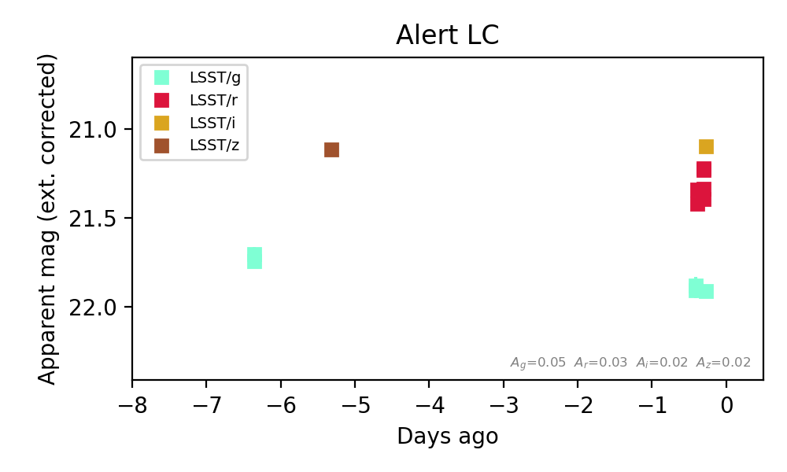
Extinction-corrected gr color:
From alerts: 0.6 +/- 0.03 mag
Extinction-corrected gi color:
From alerts: 0.81 +/- 0.04 mag
Extinction-corrected ri color:
From alerts: 0.21 +/- 0.03 mag
Consistent with synchrotron, g-r>0!
Rise Rate:
r: 1.13 mag/day
Fade Rate:
g: 0.03 mag/day
4. [LSST] 171141218449227948 (FBOT?) [Back to Top] [Fritz Alert] [Fritz Source] [Lasair]RA, Dec: 62.84901, -48.63224 4h11m23.76s, -48d-37m-56.08sGalactic (l, b): 256.06114, -46.08485 ext(g-r) = 0.015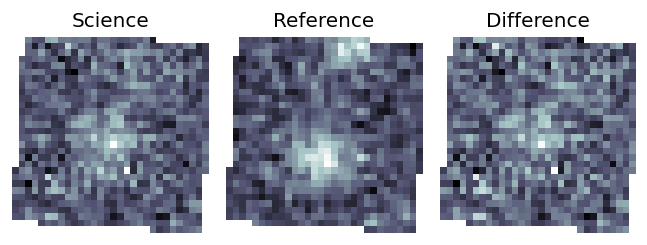

TESS: Sectors [ 3 5 30 31 97]
PS1: 0 sources in 3 arcsec
LegacySurvey: 1 sources in 3 arcsec Closest: d = 0.65 arcsec, 167.9 deg (east of north) photoz=0.45 (68% bounds 0.4, 0.52), type=REX peak abs mag (ext. corrected) = -19.92 (68% bounds -19.58, -20.28)
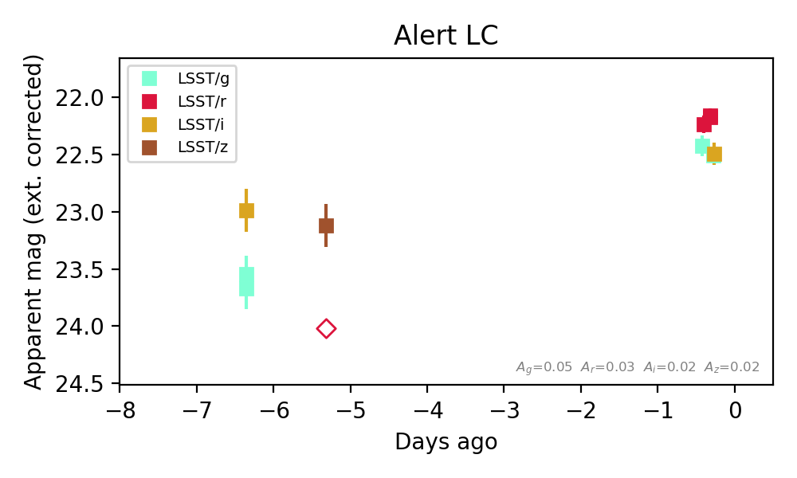
Extinction-corrected gr color:
From alerts: 0.31 +/- 0.05 mag
Extinction-corrected gi color:
From alerts: -0.0 +/- 0.11 mag
Extinction-corrected ri color:
From alerts: -0.32 +/- 0.1 mag
Consistent with synchrotron, g-r>0!
Rise Rate:
g: 0.18 mag/day
r: 0.37 mag/day
i: 0.08 mag/day
Fade Rate:
5. [LSST] 171141218720284790 (Afterglow?) [Back to Top] [Fritz Alert] [Fritz Source] [Lasair]RA, Dec: 58.64538, -50.00414 3h54m34.89s, -50d 0m-14.90sGalactic (l, b): 258.95585, -48.43652 ext(g-r) = 0.011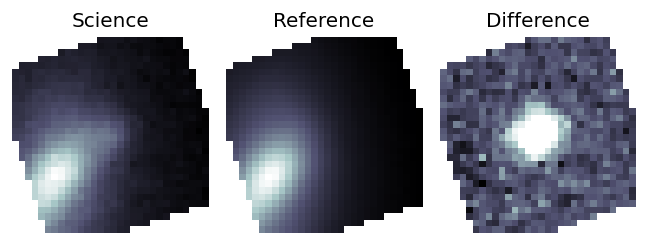

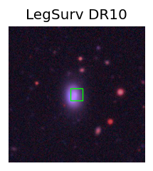
TESS: Sectors [ 3 4 30 31 97]
NED host (10 arcsec):Found WISEA J035435.08-500016.1 (G, 2.2″); NED spec-z: z=0.0423 [zflag SUN]; peak abs mag = -15.92
PS1: 0 sources in 3 arcsec
LegacySurvey: 1 sources in 3 arcsec Closest: d = 1.12 arcsec, 122.6 deg (east of north) photoz=0.09 (68% bounds 0.07, 0.17), type=SER peak abs mag (ext. corrected) = -17.73 (68% bounds -17.03, -19.12)
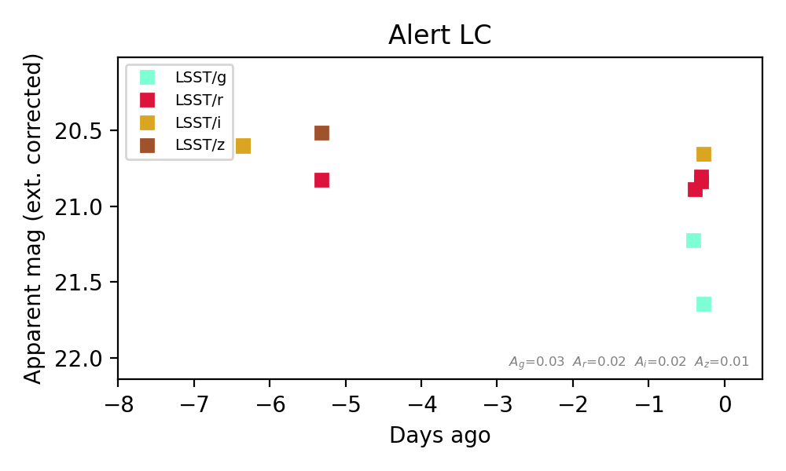
Extinction-corrected gr color:
From alerts: 0.6 +/- 0.03 mag
Extinction-corrected gi color:
From alerts: 0.78 +/- 0.03 mag
Extinction-corrected ri color:
From alerts: 0.18 +/- 0.03 mag
Consistent with synchrotron, g-r>0!
Rise Rate:
Fade Rate:
g: 3.07 mag/day
i: 0.01 mag/day
6. [LSST] 171141219007070272 (Afterglow?) [Back to Top] [Fritz Alert] [Fritz Source] [Lasair]RA, Dec: 62.71623, -48.88601 4h10m51.89s, -48d-53m-9.65sGalactic (l, b): 256.44435, -46.12315 ext(g-r) = 0.018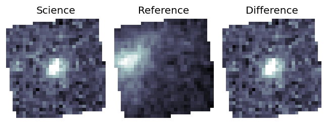

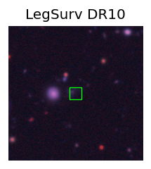
TESS: Sectors [ 3 5 30 31 97]
PS1: 0 sources in 3 arcsec
LegacySurvey: 1 sources in 3 arcsec Closest: d = 1.89 arcsec, 317.1 deg (east of north) photoz=0.9 (68% bounds 0.39, 1.87), type=PSF peak abs mag (ext. corrected) = -22.68 (68% bounds -20.48, -24.63)
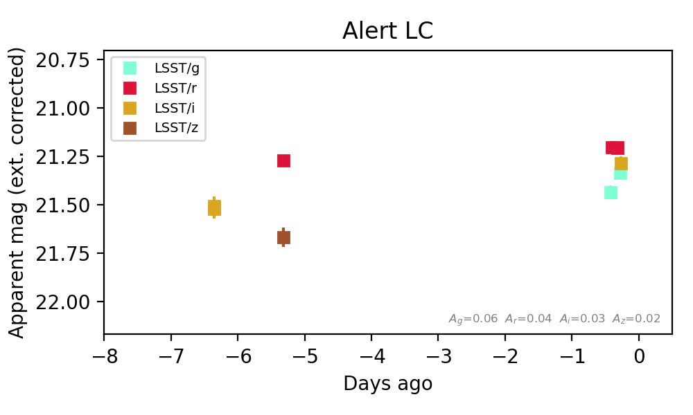
Extinction-corrected gr color:
From alerts: 0.15 +/- 0.02 mag
Extinction-corrected gi color:
From alerts: 0.07 +/- 0.04 mag
Extinction-corrected ri color:
From alerts: -0.08 +/- 0.04 mag
Consistent with synchrotron, g-r>0!
Rise Rate:
g: 0.68 mag/day
r: 0.01 mag/day
i: 0.04 mag/day
Fade Rate:
7. [LSST] 313879818754588731 (Afterglow?) [Back to Top] [Fritz Alert] [Fritz Source] [Lasair]RA, Dec: 58.97162, -49.01353 3h55m53.19s, -49d 0m-48.71sGalactic (l, b): 257.43048, -48.4929 ext(g-r) = 0.008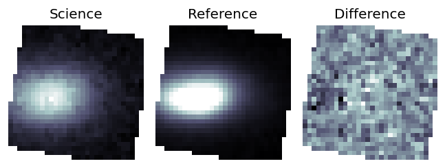

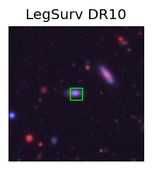
TESS: Sectors [ 3 4 30 31 97]
PS1: 0 sources in 3 arcsec
LegacySurvey: 1 sources in 3 arcsec Closest: d = 0.68 arcsec, 72.3 deg (east of north) photoz=0.11 (68% bounds 0.1, 0.13), type=SER peak abs mag (ext. corrected) = -16.44 (68% bounds -16.09, -16.74)
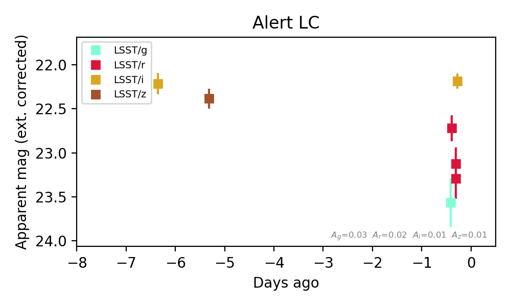
Extinction-corrected gr color:
From alerts: 0.6 +/- 0.3 mag
Extinction-corrected gi color:
From alerts: 1.38 +/- 0.29 mag
Extinction-corrected ri color:
From alerts: 0.78 +/- 0.13 mag
Consistent with synchrotron, g-r>0!
Rise Rate:
r: 0.0 mag/day
i: 0.01 mag/day
z: 0.0 mag/day
Fade Rate:
r: 5.84 mag/day
8. [ZTF] ZTF26acdwxtn (FBOT?) [Back to Top] [Share] [Trigger Swift] [Fritz Alert] [Fritz Source] [Lasair]RA, Dec: 100.94737, 69.42105 6h43m47.37s, 69d25m15.79sGalactic (l, b): 145.6628, 24.6106 ext(g-r) = 0.071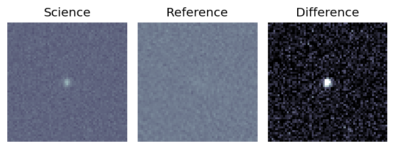
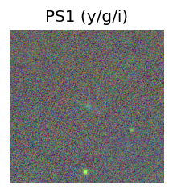
TESS: Sectors [19 20 60 73]
PS1: 0 sources in 3 arcsec
LegacySurvey: 1 sources in 3 arcsec Closest: d = 0.42 arcsec, 207.8 deg (east of north) photoz=0.16 (68% bounds 0.09, 0.26), type=DEV peak abs mag (ext. corrected) = -21.47 (68% bounds -20.1, -22.74)
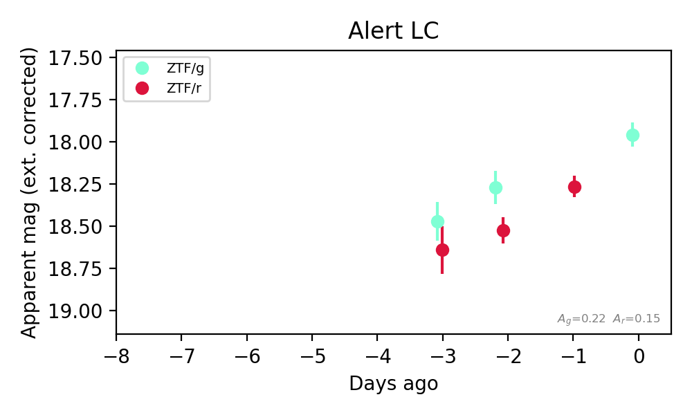
Extinction-corrected gr color:
From alerts: -0.26 +/- 0.13 mag
Rise Rate:
g: 0.16 mag/day
r: 0.21 mag/day
Fade Rate:
9. [ZTF] ZTF26acdzrfn (FBOT?) [Back to Top] [Share] [Trigger Swift] [Fritz Alert] [Fritz Source] [Lasair]RA, Dec: 320.90787, -5.92519 21h23m37.89s, -5d-55m-30.68sGalactic (l, b): 46.40499, -36.34629 ext(g-r) = 0.094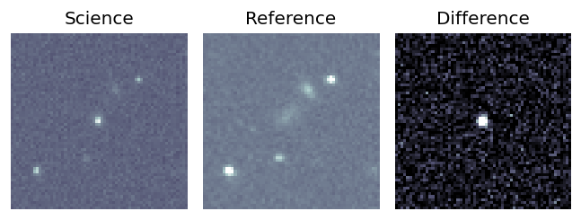
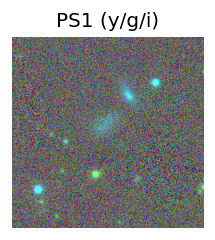
TESS: Sectors [ 55 82 92 116]
SDSS (<15 kpc):Found SDSS phot-z: z=0.30; peak abs mag = -23.40
PS1: 0 sources in 3 arcsec
LegacySurvey: 1 sources in 3 arcsec Closest: d = 2.18 arcsec, 28.8 deg (east of north) photoz=0.03 (68% bounds 0.01, 0.08), type=SER peak abs mag (ext. corrected) = -18.37 (68% bounds -16.15, -20.27)
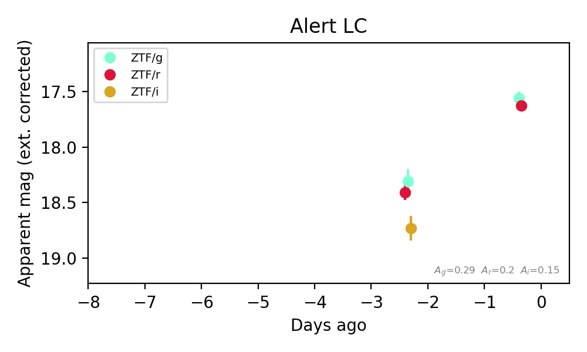
Extinction-corrected gr color:
From alerts: -0.07 +/- 0.08 mag
Extinction-corrected gi color:
From alerts: -0.42 +/- 0.16 mag
Extinction-corrected ri color:
From alerts: -0.32 +/- 0.13 mag
Consistent with synchrotron, g-r>0!
Rise Rate:
g: 0.38 mag/day
r: 0.38 mag/day
i: 0.07 mag/day
Fade Rate:
10. [ZTF] ZTF26aceadfg (Afterglow?) [Back to Top] [Share] [Trigger Swift] [Fritz Alert] [Fritz Source] [Lasair]RA, Dec: 2.15802, -0.60204 0h 8m37.93s, 0d-36m-7.34sGalactic (l, b): 99.99017, -61.55231 WARNING: -1.41 deg from ecliptic plane ext(g-r) = 0.042Observed last night in r, not detected: limit 19.91 (5σ), 2.03 d after the last r detection at 19.36 → fading ≥ 0.27 mag/day.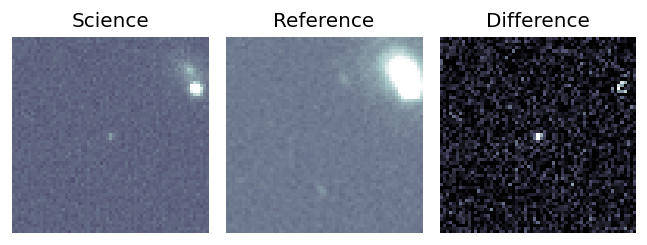
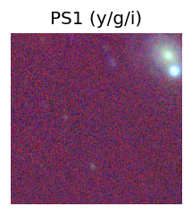
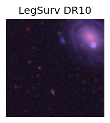
TESS: Sectors [42 70]
PS1: 0 sources in 3 arcsec
LegacySurvey: 1 sources in 3 arcsec Closest: d = 2.27 arcsec, 273.4 deg (east of north) photoz=1.11 (68% bounds 0.66, 1.5), type=REX peak abs mag (ext. corrected) = -25.16 (68% bounds -23.8, -25.98)
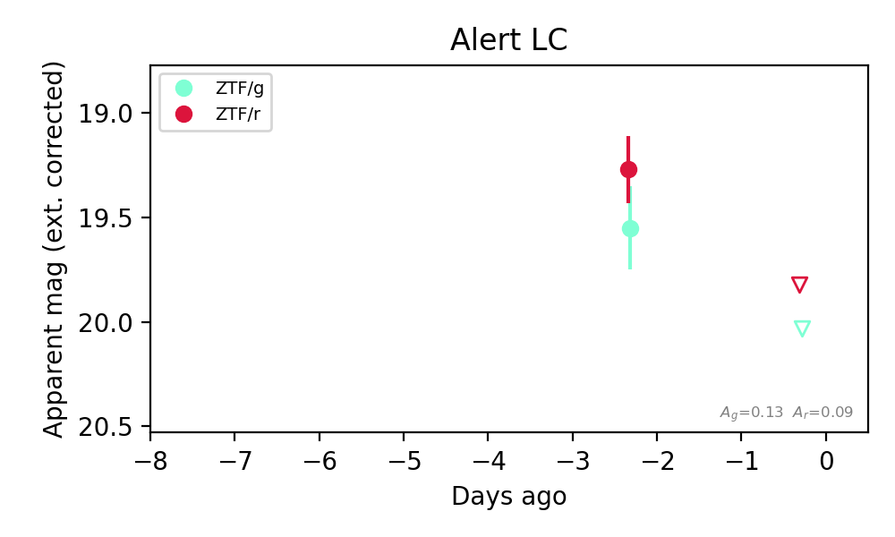
Extinction-corrected gr color:
From alerts: 0.28 +/- 0.26 mag
Consistent with synchrotron, g-r>0!
Rise Rate:
r: 0.07 mag/day
Fade Rate:
g: 0.24 mag/day
r: 0.27 mag/day
11. [ZTF] ZTF26acecgop (FBOT?) [Back to Top] [Share] [Trigger Swift] [Fritz Alert] [Fritz Source] [Lasair]RA, Dec: 359.77281, 51.7971 23h59m5.47s, 51d47m49.56sGalactic (l, b): 114.75102, -10.24123 ext(g-r) = 0.249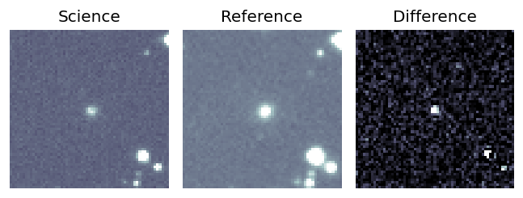
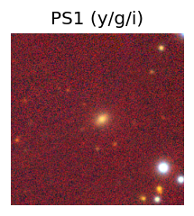

TESS: Sectors [57 84]
PS1: 1 source in 3 arcsec Closest: d = 1.46 arcsec photoz=0.11+/-0.01 peak abs mag = -20.24
LegacySurvey: 0 sources in 3 arcsec
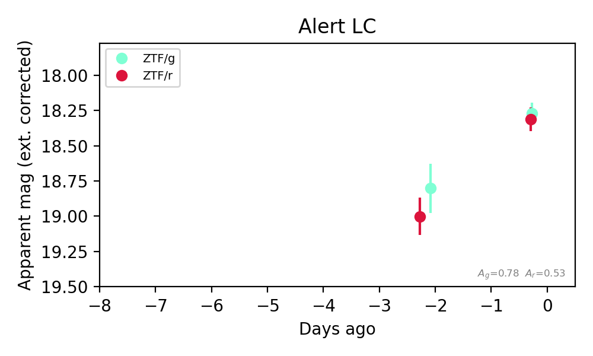
Extinction-corrected gr color:
From alerts: -0.04 +/- 0.12 mag
Consistent with synchrotron, g-r>0!
Rise Rate:
g: 0.29 mag/day
r: 0.35 mag/day
Fade Rate:
12. [ZTF] ZTF26acecjze (Afterglow?) [Back to Top] [Share] [Trigger Swift] [Fritz Alert] [Fritz Source] [Lasair]RA, Dec: 351.25131, 9.45223 23h25m0.31s, 9d27m8.02sGalactic (l, b): 90.16322, -47.8444 ext(g-r) = 0.044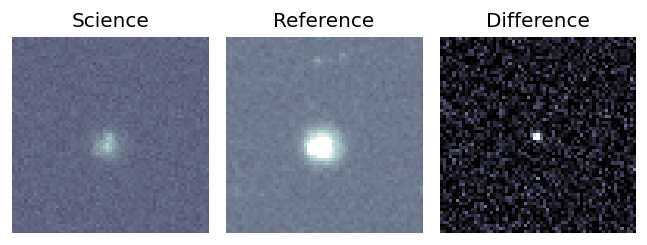
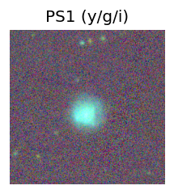
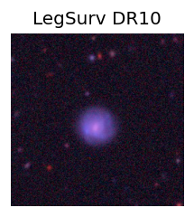
TESS: Sectors [42 56 83 92]
PS1: 0 sources in 3 arcsec
LegacySurvey: 1 sources in 3 arcsec Closest: d = 3.35 arcsec, 166.1 deg (east of north) photoz=0.07 (68% bounds 0.06, 0.09), type=REX peak abs mag (ext. corrected) = -17.98 (68% bounds -17.63, -18.38)
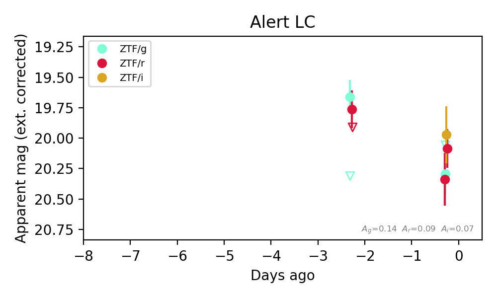
Extinction-corrected gr color:
From alerts: 0.12 +/- 0.21 mag
Extinction-corrected gi color:
From alerts: 0.32 +/- 0.29 mag
Extinction-corrected ri color:
From alerts: 0.2 +/- 0.27 mag
Consistent with synchrotron, g-r>0!
Rise Rate:
g: 0.04 mag/day
r: 0.02 mag/day
Fade Rate:
g: 0.31 mag/day
r: 0.2 mag/day
13. [ZTF] ZTF26acekidc (Afterglow?) [Back to Top] [Share] [Trigger Swift] [Fritz Alert] [Fritz Source] [Lasair]RA, Dec: 124.82568, -1.31403 8h19m18.16s, -1d-18m-50.50sGalactic (l, b): 224.56814, 18.80597 ext(g-r) = 0.076Observed last night in r, not detected: limit 20.37 (5σ), 0.97 d after the last r detection at 18.67 → fading ≥ 1.76 mag/day.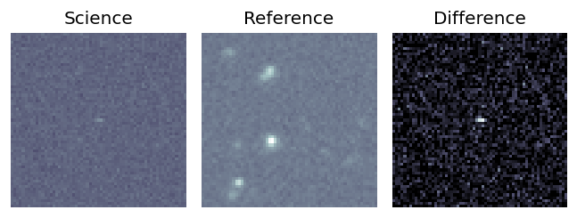
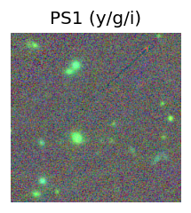
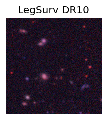
TESS: Sectors [ 7 34 61 88 112]
SDSS (<15 kpc):Found SDSS phot-z: z=0.38; peak abs mag = -23.11
PS1: 0 sources in 3 arcsec
LegacySurvey: 1 sources in 3 arcsec Closest: d = 6.76 arcsec, 245.7 deg (east of north) photoz=0.44 (68% bounds 0.37, 0.52), type=REX peak abs mag (ext. corrected) = -23.5 (68% bounds -23.05, -23.93)
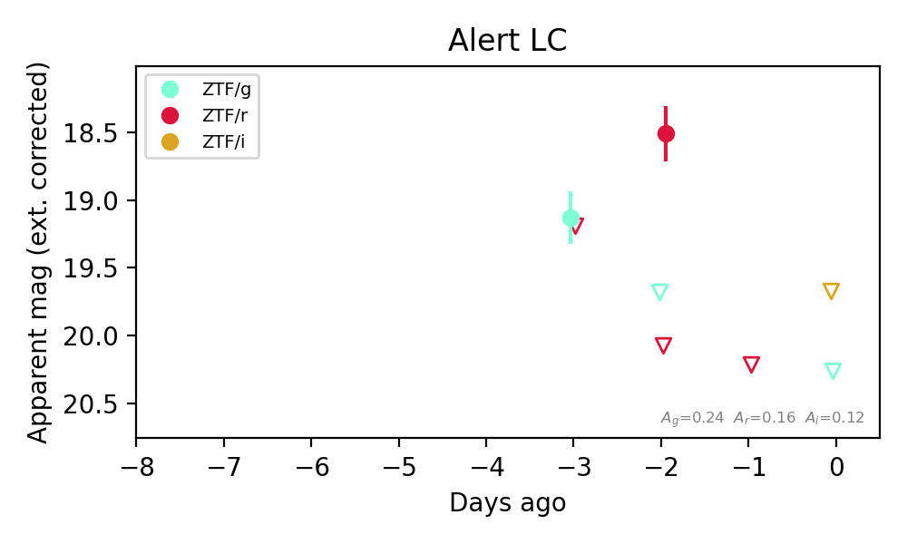
Extinction-corrected gr color:
From alerts: 1.16 +/- 99 mag
Rise Rate:
r: 45.4 mag/day
Fade Rate:
g: 0.53 mag/day
r: 1.76 mag/day
14. [ZTF] ZTF26aceemoa (FBOT?) [Back to Top] [Share] [Trigger Swift] [Fritz Alert] [Fritz Source] [Lasair]RA, Dec: 62.77433, 19.58053 4h11m5.84s, 19d34m49.90sGalactic (l, b): 174.35813, -22.77608 WARNING: -1.48 deg from ecliptic plane ext(g-r) = 0.51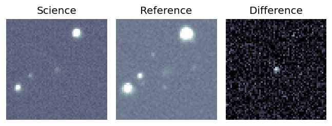
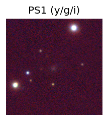

TESS: Sectors [44 70 71]
PS1: 1 source in 3 arcsec Closest: d = 1.77 arcsec photoz=0.15+/-0.10 peak abs mag = -21.03
LegacySurvey: 0 sources in 3 arcsec
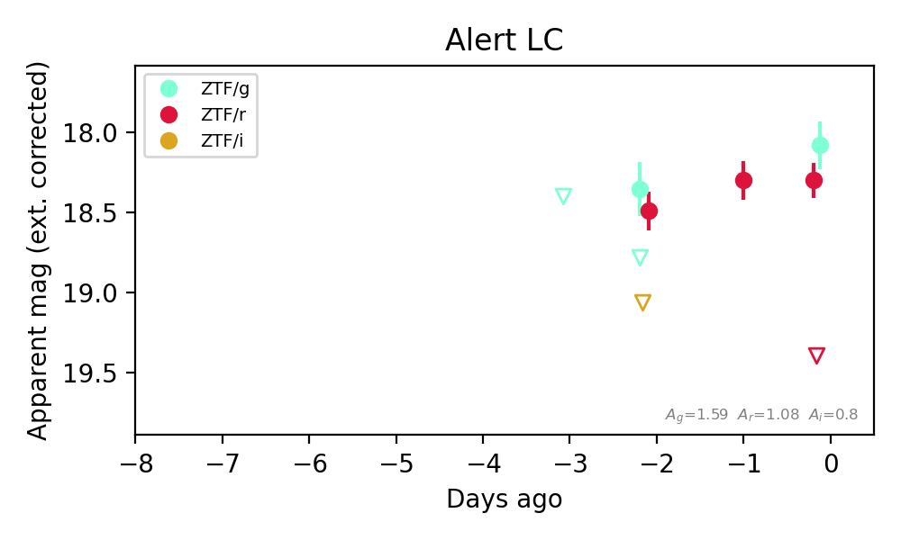
Extinction-corrected gr color:
From alerts: -0.22 +/- 0.19 mag
Extinction-corrected gi color:
From alerts: -0.71 +/- 99 mag
Extinction-corrected ri color:
From alerts: -0.57 +/- 99 mag
Rise Rate:
g: 0.34 mag/day
r: 0.04 mag/day
Fade Rate:
r: 46.9 mag/day
15. [ZTF] ZTF26acebohm (FBOT?) [Back to Top] [Share] [Trigger Swift] [Fritz Alert] [Fritz Source] [Lasair]RA, Dec: 359.72604, 12.1478 23h58m54.25s, 12d 8m52.07sGalactic (l, b): 103.26141, -48.70721 ext(g-r) = 0.106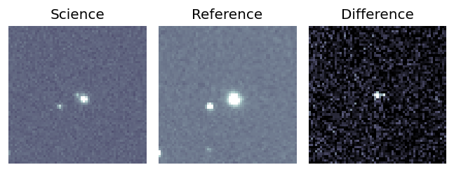
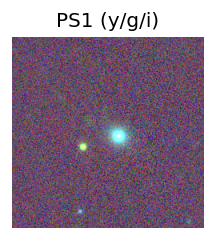
TESS: Sectors [42 43 56 83]
SDSS (<15 kpc):Found SDSS phot-z: z=0.06; peak abs mag = -19.10
PS1: 0 sources in 3 arcsec
LegacySurvey: 1 sources in 3 arcsec Closest: d = 0.40 arcsec, 357.5 deg (east of north) photoz=0.38 (68% bounds 0.24, 0.69), type=EXP peak abs mag (ext. corrected) = -23.57 (68% bounds -22.38, -25.13)
Extinction-corrected gr color:
From alerts: 0.04 +/- 0.09 mag
Extinction-corrected gi color:
From alerts: -0.21 +/- 0.1 mag
Extinction-corrected ri color:
From alerts: -0.25 +/- 0.1 mag
Consistent with synchrotron, g-r>0!
Rise Rate:
g: 0.41 mag/day
r: 0.21 mag/day
i: 0.38 mag/day
Fade Rate:
16. [ZTF] ZTF26aceipjj (FBOT?) [Back to Top] [Share] [Trigger Swift] [Fritz Alert] [Fritz Source] [Lasair]RA, Dec: 105.72528, -18.02982 7h 2m54.07s, -18d-1m-47.36sGalactic (l, b): 230.30557, -5.67127 ext(g-r) = 0.508
TESS: Sectors [ 7 33 87 108 109 110 111]
PS1: 1 source in 3 arcsec Closest: d = 8.30 arcsec photoz=1.02+/-0.08 peak abs mag = -28.69
LegacySurvey: 0 sources in 3 arcsec
Rise Rate:
i: 0.22 mag/day
Fade Rate:
17. [ZTF] ZTF26acemkcl (Afterglow?) [Back to Top] [Share] [Trigger Swift] [Fritz Alert] [Fritz Source] [Lasair]RA, Dec: 250.86386, 12.00804 16h43m27.33s, 12d 0m28.94sGalactic (l, b): 29.40296, 33.78737 ext(g-r) = 0.06
TESS: Sectors 117
PS1: 0 sources in 3 arcsec
LegacySurvey: 1 sources in 3 arcsec Closest: d = 3.17 arcsec, 320.4 deg (east of north) photoz=0.95 (68% bounds 0.59, 1.31), type=PSF peak abs mag (ext. corrected) = -26.24 (68% bounds -24.98, -27.11)
Rise Rate:
Fade Rate:
r: 0.28 mag/day
18. [ZTF] ZTF26aceqzef (Afterglow?FBOT?) [Back to Top] [Share] [Trigger Swift] [Fritz Alert] [Fritz Source] [Lasair]RA, Dec: 55.78043, 0.64871 3h43m7.30s, 0d38m55.36sGalactic (l, b): 186.13199, -40.28037 ext(g-r) = 0.121
TESS: Sectors [ 5 31 109]
NED host (10 arcsec):Found WISEA J034307.30+003849.5 (G, 5.8″); NED spec-z: z=0.0680 [zflag SLS]; peak abs mag = -17.87
PS1: 0 sources in 3 arcsec
LegacySurvey: 1 sources in 3 arcsec Closest: d = 1.63 arcsec, 126.2 deg (east of north) photoz=0.34 (68% bounds 0.16, 0.79), type=PSF peak abs mag (ext. corrected) = -21.7 (68% bounds -19.8, -23.89)
Extinction-corrected gr color:
From alerts: -0.21 +/- 0.27 mag
Extinction-corrected gi color:
From alerts: 0.01 +/- 0.26 mag
Extinction-corrected ri color:
From alerts: 0.23 +/- 0.27 mag
Consistent with synchrotron, g-r>0!
Rise Rate:
g: 0.54 mag/day
Fade Rate:
19. [ZTF] ZTF26acerebz (FBOT?) [Back to Top] [Share] [Trigger Swift] [Fritz Alert] [Fritz Source] [Lasair]RA, Dec: 32.22571, 7.70385 2h 8m54.17s, 7d42m13.85sGalactic (l, b): 153.99199, -50.43719 ext(g-r) = 0.063
TESS: Sectors [42 43 70 71]
SDSS (<15 kpc):Found SDSS phot-z: z=0.15; peak abs mag = -19.71
PS1: 0 sources in 3 arcsec
LegacySurvey: 1 sources in 3 arcsec Closest: d = 0.25 arcsec, 40.9 deg (east of north) photoz=0.46 (68% bounds 0.34, 0.56), type=REX peak abs mag (ext. corrected) = -22.48 (68% bounds -21.74, -22.99)
Extinction-corrected gi color:
From alerts: -0.06 +/- 0.38 mag
Extinction-corrected ri color:
From alerts: 0.29 +/- 99 mag
Consistent with synchrotron, g-r>0!
Rise Rate:
r: 0.24 mag/day
Fade Rate:
20. [ZTF] ZTF26acetyyo (Afterglow?) [Back to Top] [Share] [Trigger Swift] [Fritz Alert] [Fritz Source] [Lasair]RA, Dec: 95.78953, -4.30062 6h23m9.49s, -4d-18m-2.24sGalactic (l, b): 213.55574, -8.24615 ext(g-r) = 0.393
TESS: Sectors [ 6 33 87 110 111]
PS1: 1 source in 3 arcsec Closest: d = 6.84 arcsec photoz=0.15+/-0.13 peak abs mag = -20.44
LegacySurvey: 0 sources in 3 arcsec
Extinction-corrected gr color:
From alerts: -0.36 +/- 99 mag
Extinction-corrected gi color:
From alerts: 0.28 +/- 99 mag
Rise Rate:
g: 0.05 mag/day
Fade Rate:
g: 0.56 mag/day